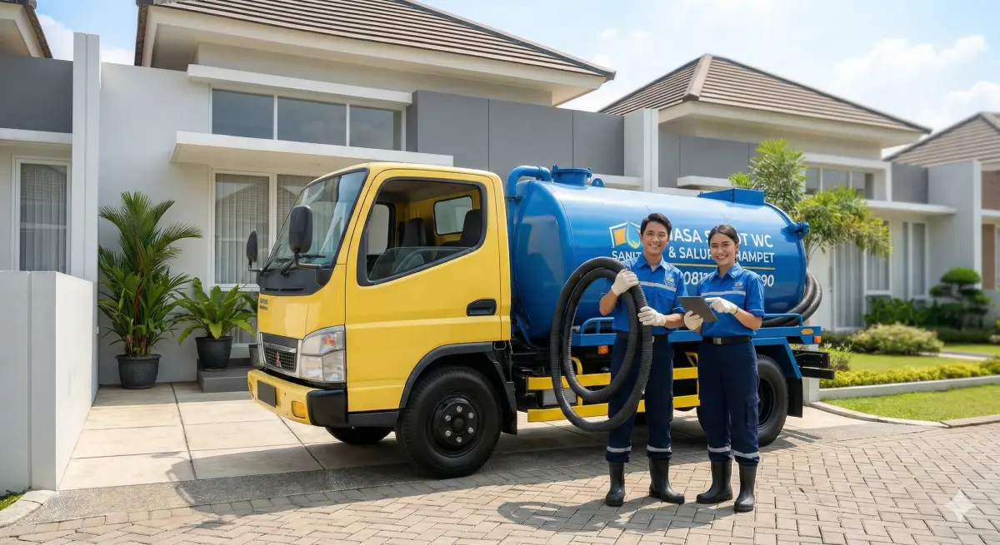

Pusat Sedot WC Jawa Barat - Solusi Kloset Mampet & Septic Tank Penuh

Kepadatan penduduk di wilayah Depok sering kali memicu masalah sanitasi, mulai dari septic tank yang cepat penuh hingga saluran pipa pembuangan yang tersumbat. Jangan biarkan bau tak sedap mengganggu kenyamanan keluarga atau penyewa kos Anda!
Pusat Sedot WC Jawa Barat (Cabang Depok) siap mengirimkan armada tangki vakum bertenaga tinggi langsung ke lokasi Anda. Kami bekerja bersih, cepat, dan transparan.
| Layanan Sanitasi & Armada | Biaya & Keterangan |
|---|---|
| Sedot Septic Tank (Per Tangki) | Rp 400.000 (Kapasitas maksimal: 3 Kubik) |
| Selang Panjang (Masuk Gang) | Tersedia hingga 100 Meter. Gratis 20 Meter pertama! |
| Pelancaran Pipa/Kloset Buntu | Hubungi Admin untuk estimasi biaya tanpa sedot. |
1. Berapa lama armada sampai ke rumah saya di Depok?
Tergantung titik kemacetan (terutama area Margonda/Sawangan), armada terdekat akan segera meluncur. Pesan pagi datang siang, pesan siang datang sore, pesan sore datang besok.
Armada kami tersebar di berbagai kota untuk memastikan respons darurat tercepat. Pilih cabang terdekat dengan lokasi Anda: